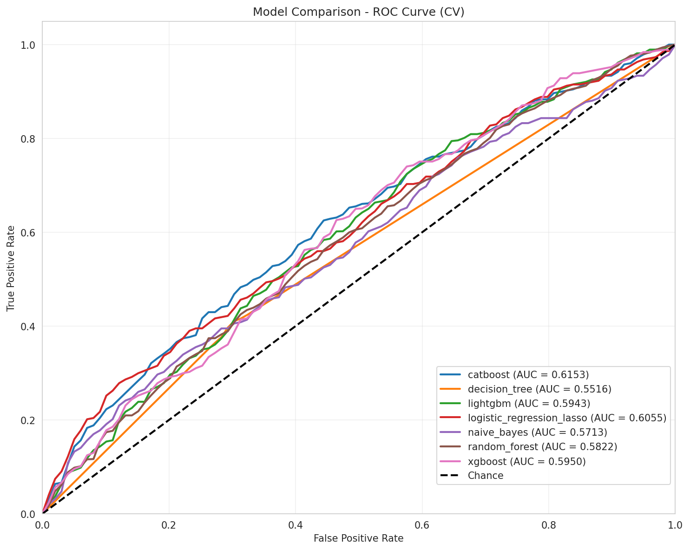
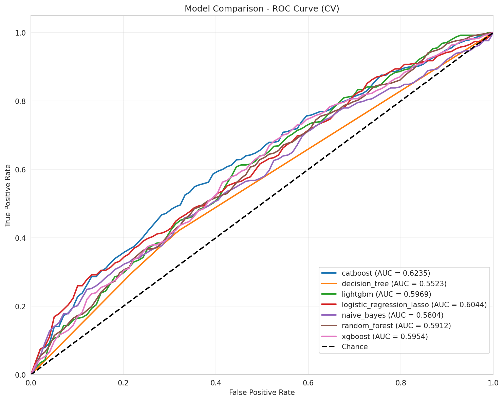
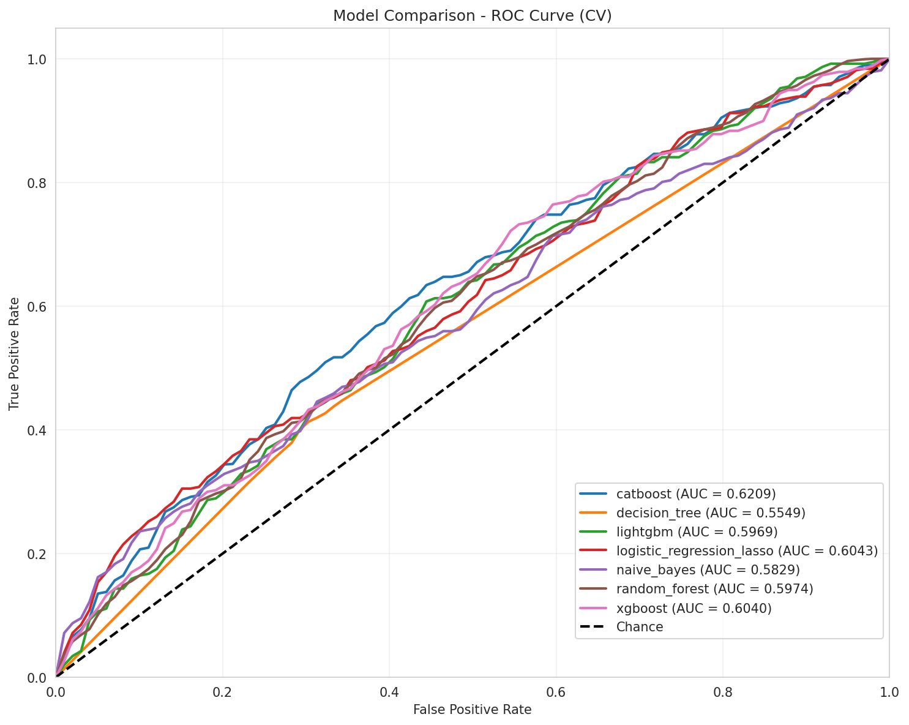
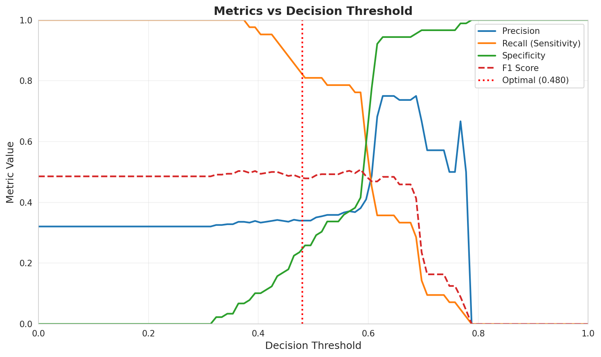
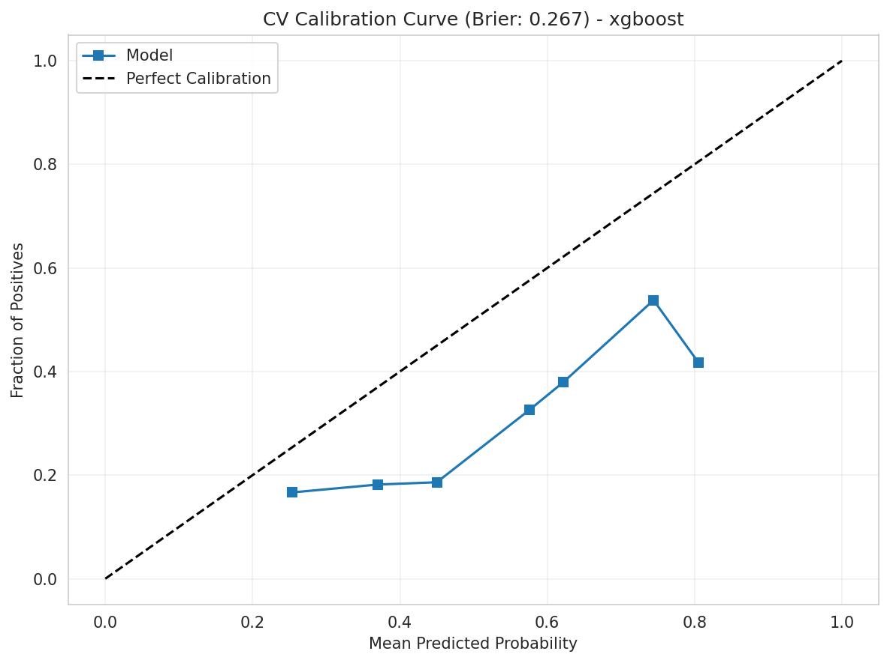
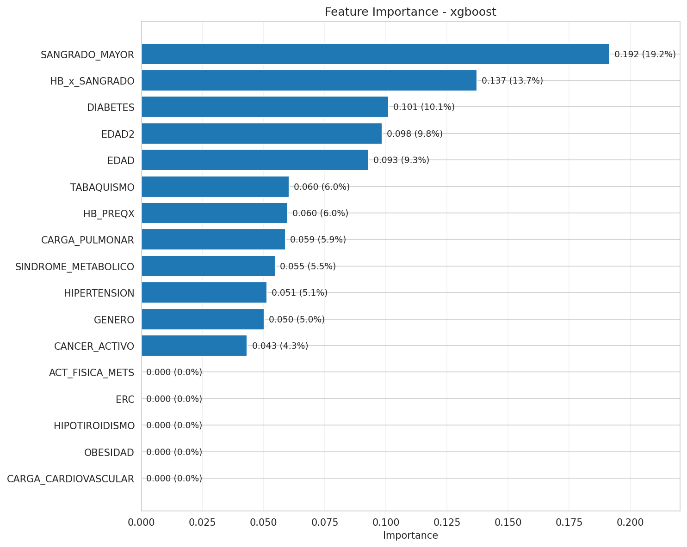

SHOCK
HEMORRÁGICO
Predicción temprana de shock hemorrágico en pacientes sometidos a cirugía mayor no cardiaca mediante modelos de inteligencia artificial
Tutor: Ángela Villota Gómez
Estudiantes: Cristian Botina, Juan Marín, Óscar Gómez
Fundación Valle del Lili — Universidad Icesi, 2025
¿Qué problema existe en el mundo médico?
El shock hemorrágico es una emergencia médica en la que el paciente pierde suficiente sangre para comprometer la perfusión de órganos vitales, llevando a hipoxia tisular, falla multiorgánica y potencialmente la muerte.
Mortalidad: Representa una de las principales causas de muerte prevenible en cirugía mayor, con tasas de mortalidad que alcanzan el 30-40% cuando no se detecta tempranamente.
Aumento de mortalidad postoperatoria, mayor necesidad de transfusiones sanguíneas, complicaciones como falla multiorgánica, daño renal y cerebral, incremento de costos hospitalarios y saturación de UCI.
La necesidad de un enfoque predictivo y personalizado
La detección temprana permite intervención inmediata antes de que se desarrolle falla multiorgánica irreversible, reduciendo significativamente la mortalidad postoperatoria.
Preparación anticipada de hemoderivados, personal médico y equipos, reduciendo transfusiones reactivas innecesarias y uso ineficiente de sangre.
Prevenir daño orgánico por hipoperfusión prolongada (insuficiencia renal aguda, daño cerebral, necrosis intestinal), acortando tiempos de recuperación.
Complementar la experiencia médica con herramientas predictivas basadas en inteligencia artificial, estandarizando criterios diagnósticos y reduciendo sesgos.
Desarrollar un modelo de inteligencia artificial que permita la predicción temprana del riesgo de shock hemorrágico, integrando datos preoperatorios e intraoperatorios.
Predicción temprana de shock hemorrágico con IA
Desarrollar y validar un modelo de inteligencia artificial que permita la predicción temprana del riesgo de shock hemorrágico en pacientes sometidos a cirugía mayor no cardiaca, integrando datos clínicos preoperatorios e intraoperatorios.
Proyecto desarrollado siguiendo estándares CRISP-DM (minería de datos) y TRIPOD (modelos predictivos en medicina) para garantizar rigor científico y aplicabilidad clínica.
¿Cómo se está abordando el problema?
Metodología experimental en 4 fases iterativas
Datos de pacientes de la Fundación Valle del Lili
CRISP-DM + TRIPOD para desarrollo riguroso
Cross-Industry Standard Process for Data Mining — Marco iterativo de 6 fases:
Transparent Reporting of a multivariable prediction model for Individual Prognosis Or Diagnosis — Guía para modelos predictivos en medicina:
Fase 1: Evaluación baseline con 7 algoritmos por defecto · Fase 2: Feature engineering con conocimiento médico · Fase 3: Selección del modelo champion · Fase 4: Optimización de hiperparámetros y umbral de decisión
SHapley Additive exPlanations — Transparencia del modelo
Técnica basada en teoría de juegos que calcula la contribución individual de cada variable a la predicción del modelo.
Usa valores de Shapley para repartir la "responsabilidad" de la predicción entre todas las variables, comparando qué tanto cambia el resultado si una característica se incluye o excluye.
Importancia Global: Qué variables pesan más en promedio (EDAD: 42.9%, HB_PREQX: 32.8%)
Explicaciones Locales: Por qué un paciente específico fue clasificado en riesgo
Evaluación de 7 algoritmos con configuración por defecto
Objetivo: Establecer línea base de rendimiento
7 algoritmos: XGBoost, CatBoost, Random Forest, LightGBM, Decision Tree, Naive Bayes, Logistic Regression

| Modelo | AUC-ROC | Sensibilidad | Especificidad | Cohen's Kappa |
|---|---|---|---|---|
| XGBoost | 0.564 | 0.26 | 0.84 | 0.22 |
| CatBoost | 0.615 | 0.23 | 0.89 | 0.18 |
| Naive Bayes | 0.571 | 0.95 | 0.02 | 0.09 |
AUC inicial de 0.615 con modelos base. CatBoost mostró el mejor rendimiento inicial con Recall de 80.9%, cumpliendo el objetivo clínico de detectar >80% de casos.
Enriquecimiento con conocimiento médico
Variables derivadas y agregaciones fisiológicas
Variables más influyentes identificadas por XGBoost

| Variable | Importancia | Interpretación Clínica |
|---|---|---|
| SANGRADO_MAYOR | 26.7% | Variable más discriminativa: parámetro directo de hemorragia |
| HIPERTENSION | 7.1% | Comorbilidad vascular predisponente, modula tolerancia cardiovascular |
| ACT_FISICA_METS | 6.1% | Capacidad funcional preoperatoria, reserva fisiológica |
| CANCER_ACTIVO | 5.7% | Diátesis procoagulante y fragilidad vascular |
De 0.564 a 0.583. Mejora modesta: características lineales tienen límites. Interacciones no-lineales requieren algoritmos ensemble.
Selección del modelo final
Estabilidad · Métricas discriminativas · Calibración
Reducción de 95 → 21 variables seleccionadas

| Modelo | Cohen's Kappa | Sensibilidad | Especificidad | Veredicto |
|---|---|---|---|---|
| XGBoost | 0.463 | 0.463 | 0.680 | ✓ CHAMPION |
| CatBoost | 0.432 | 0.425 | 0.682 | Kappa inferior |
| Random Forest | 0.330 | 0.425 | 0.519 | Especificidad baja |
Regularización L1/L2 reduce overfitting · Balance Sensibilidad-Especificidad óptimo · Kappa = 0.463 (acuerdo moderado sustancial)
Ajuste de hiperparámetros y umbral de decisión
Objetivo: Minimizar falsos negativos
Trade-off Sensibilidad vs Especificidad

Threshold ≈ 0.30-0.35
Confiabilidad de probabilidades predichas

El modelo es moderadamente bien calibrado en rango 0.2-0.6, con tendencia a subestimar riesgo en extremos altos.
• Predicciones en rango 0.30-0.50 son fiables clínicamente
• Predicciones > 0.80 requieren confirmación adicional (lactato, presión arterial)
Mejora Fase 3 → Fase 4

| Métrica | Baseline | Campeón | Δ Mejora |
|---|---|---|---|
| AUC-ROC | 0.615 | 0.639 | +0.024 (+3.9%) |
| Recall | 0.809 | 0.865 | +0.056 (+6.9%) |
| Especificidad | 0.299 | 0.285 | -0.014 (-4.7%) |
| F2-Score | 0.643 | 0.678 | +0.035 (+5.4%) |
¿En qué etapa está el proyecto?
Resultados concretos y estado actual
Recall (Sensibilidad)
Detecta 326 de 377 casos de shock
Especificidad: 28.54% (71.46% falsos positivos)
Justificación clínica: En shock hemorrágico, priorizar Recall sobre Especificidad es crítico. Mejor tener alertas adicionales que perder un caso potencialmente fatal.
Umbral óptimo: 0.48
Evolución del rendimiento a través de las 4 fases
7 algoritmos con configuración por defecto. Mejor resultado: CatBoost AUC 0.615, Recall 80.9%. Cumple objetivo clínico de detectar >80% de casos.
Agregaciones clínicas: HB_PREQX (26.8%), EDAD² (21.3%), HB_x_SANGRADO (5.9%). Mejora: AUC 0.624 (+1.5%), Recall 80.1%.
Selección de características basada en importancia. CatBoost mantiene mejor rendimiento: AUC 0.621, preservando Recall alto.
Hyperparameter tuning + threshold 0.48. XGBoost campeón: AUC 0.639, Recall 86.5%, F2-Score 0.678. Supera objetivo clínico.
Síntesis del mensaje e impacto proyectado
El dataset actual no permite predicción clínicamente robusta del shock hemorrágico. Sin embargo, hemos desarrollado una arquitectura de experimentación robusta, parametrizable y escalable que constituye la base fundamental para futuros desarrollos con datos más completos.
Próximos pasos y el verdadero logro de este proyecto
No logramos un sistema de predicción clínico operacional (el dataset no lo permite), pero construimos la arquitectura robusta y metodología rigurosa que permitirá lograrlo cuando se cuente con datos temporales continuos. Este es un proyecto de infraestructura que sienta las bases para futuros desarrollos exitosos.
Llega más lejos